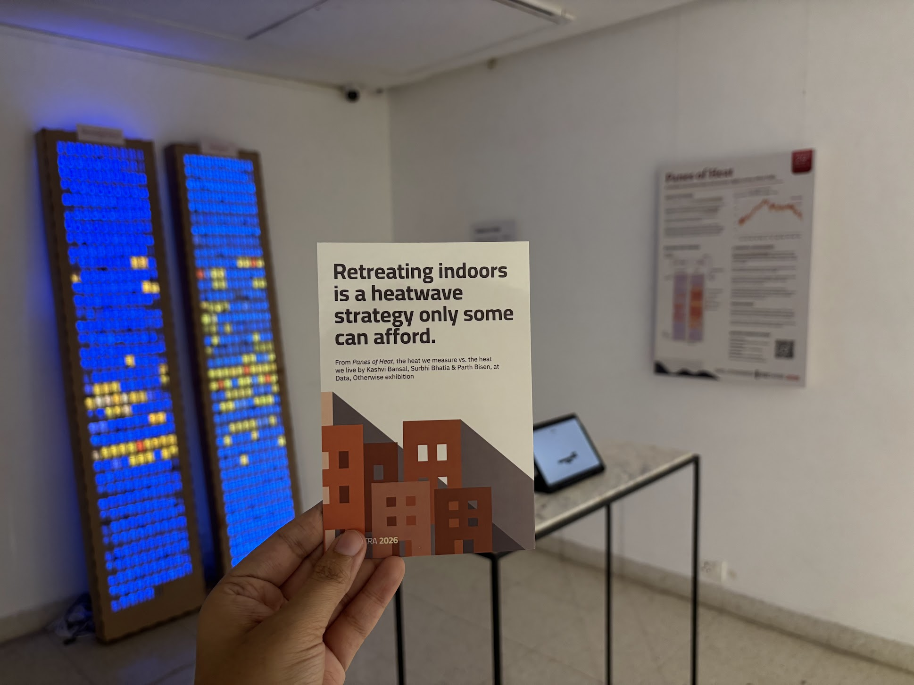

A window into hotter days and warmer nights across urban India.
Created for Data, Otherwise, the tangible data exhibition on climate and ecological change at VizChitra 2026.
India's cities are getting hotter. Temperatures recorded on thermometers often do not capture how heat is experienced by the human body through the day and at night.
The year 2024 was the hottest ever recorded, and 2025 followed close behind as the third warmest year on Earth since 1850, data from the World Meteorological Organization shows.
In fact, years since 2015 form the hottest decade on record, with temperatures remaining dangerously high. In the three-year period from 2023–2025, for the first time, the average global temperature crossed 1.5 °C above pre-industrial levels — a key climate threshold scientists have long warned about.
Change in global temperatures since pre-industrial levels.
Source: ERA5
India's heatwaves are becoming longer, hotter, and more dangerous. On 27 April 2026, all 50 of the world's hottest cities were in India, with average peak temperatures of 44.7 °C. Yet the temperatures reported on a thermometer capture only part of the story. Heat stress depends not just on air temperature, but also on humidity, wind, and sunlight — meaning a recorded temperature of 40 °C can feel closer to 48–52 °C on the human body. The effects ripple through everyday life: outdoor work becomes unsafe, productivity falls, children miss school, hospital admissions rise, and hot nights prevent the body from recovering. With limited access to air conditioning and millions working outdoors, heat is not simply a weather event in India — it is an everyday public health and livelihood challenge.
The Indian Meteorological Department officially declares a heatwave when the maximum temperature crosses 40 °C in the plains, 37 °C along the coast, or 30 °C in the hills, and is at least 4.5 °C above the seasonal normal. But the lived experience of heat-stress runs far ahead of these thresholds. Once humidity, low wind, and direct sun are factored in, what a body actually feels at 40 °C can sit closer to 48–52 °C on the UTCI “felt” scale — the point at which the body can no longer shed heat fast enough to keep its core temperature stable.
The Universal Thermal Climate Index (UTCI) is a “felt” temperature. It combines air temperature, humidity, wind, and solar radiation into a single number that reflects what a person outdoors actually experiences. The thermometer measures the air; the UTCI measures the load on the body. Above 32 °C the body is already in strong heat stress; above 46 °C the body cannot keep its core temperature stable.
Daily actual (T2M) and feels-like (UTCI) temperatures across four Indian metros in 2024. Each vertical dumbbell connects the day's actual temperature to its felt temperature; watch the clock tick through the hours and all four cities update together.
Across all four cities, roughly a third of the year — or more — the nights stay hot enough that the body cannot recover.
2024 calendar for each city. Coloured cells mark days when the temperature crossed the city's day cutoff (Delhi and Kolkata 40 °C, Mumbai and Chennai 37 °C). A blue dot in the corner marks a tropical night — on the Actual panel, this is a night when T2M stayed above 25 °C; on the Feels-like panel, a night when UTCI stayed above 25 °C. The deeper the blue, the warmer the night.
Each clock face is 12 hours. The inner ring (yellow) marks the hours where the actual temperature crossed the city's cutoff on more than 30 days of 2024; the outer ring (orange) marks the same threshold on the felt (UTCI) scale. Delhi and Kolkata use 40 °C during the day and 30 °C at night; Mumbai and Chennai use 37 °C and 30 °C. Toggle between the morning face (12 AM – 12 PM) and the evening face (12 PM – 12 AM).
Each window in a tower is one day of 2024. The clock ticks through 24 hours — every window updates to show how hot it was, at that hour, on that day. On the left, the actual temperature (T2M). On the right, the felt temperature (UTCI). Below the city's cutoff, the window sits cool and blue; above it, the window lights up yellow → orange → red → deep red as the load on the body climbs.

Before touching any material, we drew the year of heat by hand — testing how a calendar of days, a clock of hours, and a tower of windows could each become a physical object you can walk up to and read at a glance.
Each “window” on the tower needed to be small, uniform, and visibly warm when the day was hot. We visited hardware shops and studios to find materials that could hold a colour, catch a light, and stack tightly across 365 days.
Every window lit up to the temperature it recorded. Together, the towers, calendar, and clocks form one object you can stand in front of and see the year of heat — hour by hour, day by day.
Sources, thresholds, and how IST hours are computed from UTC samples
Thresholds vary by city because the Indian Meteorological Department (IMD) sets different daytime heatwave thresholds for plains, coastal cities, elevated cities, and hill stations. Night thresholds are city-specific by climatology.
Coastal vs landlocked — coastal cities (Mumbai, Chennai) are moderated by the sea breeze, so their air temperature rarely climbs as high as the inland plains, and the IMD sets a lower daytime heatwave cutoff of 37 °C for them. Landlocked plains cities (Delhi, Kolkata) sit far from the coast, heat up more sharply during the day, and use the standard plains cutoff of 40 °C. On the felt (UTCI) scale, though, coastal humidity often pushes the body's actual heat load above what the thermometer implies — which is why the two coastal towers in the buildings viz light up so much even at temperatures well below 40 °C.
| City | Terrain type | IMD daytime heatwave threshold | Tropical night threshold |
|---|---|---|---|
| Delhi | Plains | 40 °C | 26 °C |
| Mumbai | Coastal | 37 °C | 30 °C |
| Chennai | Coastal | 37 °C | 30 °C |
| Kolkata | Plains | 40 °C | 30 °C |
ERA5 hourly T2M and derived UTCI from the Copernicus Climate Data Store.
Hourly T2M and UTCI values used in this story were pulled from the Copernicus Thermal Trace aggregated-timeseries endpoint. One request returns a time series for a single point (latitude/longitude) over the requested window and temporal aggregation.
GET https://apps.climate.copernicus.eu/thermal-trace-server/aggregated-timeseries-new
?x=<longitude>
&y=<latitude>
&temporal_agg=<yearly|seasonal|monthly|hourly>
&r=0
&variable=<utci|t2m>
&start_time=<YYYY-MM-DD>
&end_time=<YYYY-MM-DD>
&apply_mask=false
Headers:
Origin: https://thermaltrace.climate.copernicus.eu
Referer: https://thermaltrace.climate.copernicus.eu/x, ytemporal_agghourly for the calendar and diurnal charts; monthly for the monthly bar charts.variablet2m for the actual 2 m air temperature, utci for the derived feels-like value.start_time, end_timer, apply_maskr=0 selects the point sample (no spatial radius); apply_mask=false keeps water and non-land cells.Curated by: Debanshu Bhaumik, Siddhartha Mukherjee
Built with support from: Rachel, Kavi, Aditi, and Laser Smiths
Our exhibit stood alongside: x, y, z